\(
\newcommand{\tc}{\: : \:}
\newcommand{\spR}{\mathbb{R}}
\newcommand{\spC}{\mathbb{C}}
\newcommand{\spZ}{\mathbb{Z}}
\newcommand{\spNa}{\mathbb{N}}
\newcommand{\spLd}{L^1(\mathbb{R}^d)}
\newcommand{\spLLd}{L^2(\mathbb{R}^d)}
\newcommand{\spLdd}{L^1(\mathbb{R}^{2d})}
\newcommand{\spLLdd}{L^2(\mathbb{R}^{2d})}
\newcommand{\intRd}{\int_{\spR^d}}
\newcommand{\intRdd}{\int_{\spR^{2d}}}
\newcommand{\norma}[1]{\Vert #1 \Vert}
\newcommand{\normaL}[1]{\Vert #1 \Vert_{L^1}}
\newcommand{\normaLL}[1]{\Vert #1 \Vert_{L^2}}
\newcommand{\normaLd}[1]{\Vert #1 \Vert_{L^1(\spR^d)}}
\newcommand{\normaLdd}[1]{\Vert #1 \Vert_{L^1(\spR^{2d})}}
\newcommand{\normaLLd}[1]{\Vert #1 \Vert_{L^2(\spR^d)}}
\newcommand{\normaLLdd}[1]{\Vert #1 \Vert_{L^2(\spR^{2d})}}
\newcommand{\inprod}[2]{\langle \, #1, \, #2 \, \rangle}
\newcommand{\Ftr}{\mathcal{F}}
\newcommand{\eFtr}[2]{e^{-2 \pi i #1 \cdot #2}}
\newcommand{\eIFtr}[2]{e^{2 \pi i #1 \cdot #2}}
\DeclareMathOperator{\Sinc}{sinc}
\DeclareMathOperator{\Rect}{rect}
\DeclareMathOperator{\Span}{span}
\DeclareMathOperator{\Dom}{dom}
\DeclareMathOperator{\Real}{Re}
\DeclareMathOperator{\Spectrogram}{Sp}
\newcommand{\vertarrowbox}[3][3pt]{
\begin{array}[t]{@{}c@{}}
#2 \\[-.4em]
\uparrow \\[-.4em]
{\scriptsize #3}
\end{array}%
}
\)
UNIVERSITÀ DEGLI STUDI DI TORINO
DIPARTIMENTO DI MATEMATICA GIUSEPPE PEANO
Tesi di Laurea Magistrale — A.A. 2021/2022
Trasformata di Gabor e principi di indeterminazione:
aspetti teorici e visualizzazioni grafiche
Relatore — Prof. Paolo Boggiatto
Candidato — Matteo Bramardi
Introduzione all'analisi armonica
La trasformata di Fourier
Trasformata di Fourier
La Trasformata di Fourier su $L^1$ è un operatore lineare definito da
\[
\Ftr \tc f \in \spLd \, \longmapsto \, \hat{f} \tc \spR^d \, \longrightarrow \, \hat{f}(\omega)
\triangleq \intRd f(x) \, \eFtr{x}{\omega} \, dx \, .
\]
La definizione può essere estesa a $L^2$ con una procedimento per densità.
Plancherel
Se $f \in \spLd \cap \spLLd$, allora
\[
\normaLLd{f} = \normaLLd{\hat{f}} \, .
\]
Quindi, $\Ftr$ può essere estesa su $\spLLd$ come operatore unitario e
\[
\underbracket{\inprod{f}{g}_{\spLd} =
\inprod{\hat{f}}{\hat{g}}_{\spLLd}}_{\textit{Formula di Parseval}}
\, , \quad \forall f, g \in \spLLd \, .
\]
Visualizzazione grafica della trasformata di Fourier
Per $f \tc \spR \, \longrightarrow \, \spR$, l'espressione $c(t) = f(t) \, \eFtr{\omega}{t}$ per $t
\in \spR$ può essere interpretata come la curva nel piano complessa ottenuta dalle rotazioni intorno
all'origine con frequenza $\omega$ a distanza variabile nel tempo $f(t)$.
Il centro di massa della curva per $t \in [T_1, T_2] \subset \spR$ è dato da
\[
c_{\text{cdm}} = \frac{1}{T_2 - T_1} \int_{T_1}^{T_2} \! c(t) \, dt
\]
e quindi anche la trasformata di Fourier $\hat{f}(\omega) = \int_{\spR} c(t, \omega) \, dt$ può
essere interpreta come una misura del centro di massa della curva $c(t, \omega) = f(t) \,
\eFtr{\omega}{t}, \; t \in \spR$.
$\scriptsize\, c(t), \quad \bullet \;
c_{\textrm{cdm}}$
play_arrow
skip_previous
skip_next
$\scriptsize f$
$\scriptsize |\hat{f}|, \quad \bullet \;\,
|c_{\textrm{cdm}}|$
Esempi
Per $a \in \spR, \; a \gt 0$, se $\, \varphi_a (x) \triangleq e^{-\pi \frac{x^2}{a}}$ è una
gaussiana non normalizzata di larghezza $a$ su $\spR^d$, allora
\[
\varphi_a (x) \, \stackrel{\Ftr \,}{\longmapsto} \, a^{\frac{d}{2}} \varphi_{\frac{1}{a}} (x) \, .
\]
$\scriptsize \varphi_3, \quad$
$\scriptsize \Ftr \varphi_3$
$\scriptsize \Ftr \varphi_3, \quad$
$\scriptsize \varphi_3$
Per $x, \omega \in \spR$,
\[
\Rect(x) \, \stackrel{\Ftr \,}{\longmapsto} \, \Sinc(\pi \omega) \, ,
\]
dove
\[
\Rect(x) \triangleq
\begin{cases}
0 & \text{se} \; |x| \gt \frac{1}{2} \\
\frac{1}{2} & \text{se} \; |x| = \frac{1}{2} \\
1 & \text{se} \; |x| \lt \frac{1}{2} \\
\end{cases}
\]
\[
\Sinc(\pi \omega) \triangleq \frac{\sin(\pi \omega)}{\pi \omega} \, .
\]
$\scriptsize \varphi_3, \quad$
$\scriptsize \Ftr \varphi_3$
$\scriptsize \Ftr \varphi_3, \quad$
$\scriptsize \varphi_3$
Estensione della trasformata di Fourier
Nonostante, in generale, non esistano relazioni di inclusione tra gli spazi $L^p$, la trasformata di
Fourier — precedentemente definita su $L^1$ — può essere estesa su $L^2$.
Sia $f \in \spLLd$. Poiché $\spLd \cap \spLLd$ è denso in $\spLLd$, esiste una successione
\[
(f_n)_{n \in \spNa} \subset \spLd \cap \spLLd \tc \normaLL{f_n - f} \, \longrightarrow \, 0 \, .
\]
Si ha che $\hat{f}_n$ è ben definita $\forall n \in \spNa$. Inoltre, $\normaLL{\hat{f}_n -
\hat{f}_m} = \normaLL{f_n - f_m}$
per il teorema i Plancherel, da cui segue che $(\hat{f}_n)_{n \in \spNa}$ è una successione di
Cauchy su $\spLLd$. Poiché $\spLLd$ è uno spazio di Hilbert e quindi uno spazio metrico completo,
$\exists ! \, \tilde{f} \tc \lim_{\, n \, \to \, \infty} \hat{f}_n = \tilde{f}$ con convergenza in
$\spLLd$. La trasformata di Fourier $\hat{f}$ di $f \in \spLLd$ è definita come $\hat{f} \triangleq
\tilde{f}$.
Alternativamente, la trasformata di Fourier su $L^2$ può essere definita sfruttando la densità della
classe di Schwartz in $L^2$.
Lo spazio di Schwartz è lo spazio delle funzioni lisce che decrescono rapidamente, cioè
\[
\mathcal{S}(\spR^d) \triangleq \big\{\, f \tc \spR^d \, \longrightarrow \, \spR \; (\text{o} \;
\spC) \tc f \in C^\infty \; \text{e decresce rapidamente} \, \big\} \, ,
\]
dove una funzione $f$ decresce rapidamente se
\[
\sup_{x \, \in \, \spR^d} |x^{\beta} D^\alpha f| \lt \infty \quad \forall \alpha, \beta \in \spNa^d
\]
e $D$ è l'operatore di derivazione parziale per cui $D^\alpha f \triangleq \partial_{x_1}^{\alpha_1}
\dots \partial_{x_d}^{\alpha_d} f$.
Si ha che $\mathcal{S}(\spR^d) \subset L^p(\spR^d)$, $\forall p \in [1, \infty]$, ed è denso $\forall p
\in [1, \infty)$. Inoltre, la trasformata di Fourier è una biiezione $\Ftr \tc \mathcal{S}(\spR^d) \,
\longrightarrow \, \mathcal{S}(\spR^d)$ ed è un'isometria su $\mathcal{S}(\spR^d)$ con la norma $L^2$.
Allora
\[
\Ftr \tc \mathcal{S}(\spR^d) \subset \spLLd \, \longrightarrow \, \spLLd
\]
può essere esteso ad un'isometria su $\spLLd$.
Operatori
Shift tempo-frequenza
Dati $f \tc \spR^d \, \longrightarrow \, \spR$ (o $\spC$) e $\omega \in \spR^d$, l'operatore di
traslazione $T_x$ è definito da
\[
T_x f(t) \triangleq f(t - x) \, ,
\]
mentre l'operatore di modulazione $M_\omega$ da
\[
M_\omega f(t) \triangleq \eIFtr{\omega}{t} f(t) \, .
\]
Le composizioni di una traslazione e una modulazione, ovvero $T_x M_\omega$ oppure $M_\omega T_x$,
sono dette shift tempo-frequenza.
$\scriptsize T_x f, \quad$
$\scriptsize f \triangleq e^{-t^2}$
$\scriptsize \Real(M_\omega f), \quad$
$\scriptsize f$
$\scriptsize \Real(M_\omega T_x f), \quad$
$\scriptsize f$
$\scriptsize M_\omega T_x f$
Gli shift tempo-frequenza sono isometrie su $L^p$, $\forall p \in [1, \infty]$ ed esiste una relazione
di commutazione:
\[
T_x M_\omega = \eFtr{\omega}{x} \, M_\omega T_x
\]
\[
(T_x f)\,\hat{} \, = M_{-x} \hat{f} \, ,
\]
\[
(M_\omega f)\,\hat{} \, = T_{\omega} \hat{f} \, ,
\]
\[
(T_x M_\omega f)\, \hat{} \, = \eFtr{\omega}{x} \, T_\omega M_{-x} \hat{f} \, .
\]
Convoluzione, involuzione e riflessione
Date $f, g \in \spLd$, la convoluzione di $f$ e $g$ è definita come
\[
(f * g)(x) \triangleq \intRd f(y) g(x - y) \, dy \, .
\]
$\scriptsize (f * g)(-1)$
$\scriptsize (f * g)(0)$
$\scriptsize (f * g)(+1)$
$\scriptsize (f * g)(\boldsymbol{\cdot}), \quad$
$\scriptsize f \cdot g(x - \boldsymbol{\cdot}),
\quad$
$\scriptsize f, \quad$
$\scriptsize g$
Per $f, g \in L^1$,
\[
(f * g)\,\hat{} \, = \hat{f} \cdot \hat{g} \, .
\]
La riflessione è un operatore definito come
\[
\mathcal{I} \tc f \, \longmapsto \, \mathcal{I} f \tc \mathcal{I} f(x) \triangleq f(-x) \, ,
\]
mentre l'involuzione su $\spLd$ è definita come
\[
^* \tc f \, \longmapsto \, f^* \triangleq \overline{\mathcal{I}f} \tc f^*(x) \triangleq
\overline{f(-x)} \, .
\]
Per $f, g \in \spLd$,
\[
\widehat{f^*} = \bar{\hat{f}} \, , \quad \widehat{\mathcal{I} f} = \mathcal{I} \hat{f}
\]
e, se entrambi i lati dell'equazione sono definiti,
\[
(f * g)(x) = \inprod{f}{T_x g^*} \, .
\]
La trasformata di Fourier inversa
\[
f, \hat{f} \in \spLd \; \Longrightarrow \; f(x) = \intRd \hat{f}(\omega) \, \eIFtr{x}{\omega} \,
d\omega \quad \forall x \in \spR^d \, .
\]
Il segnale $f$ può essere ricostruito perfettamente — usando la sua trasformata $\hat{f}$ — come
"
somma continua" di frequenze pure $\eIFtr{\omega\,}{\boldsymbol{\,\cdot}}$. Pertanto, ne
deduciamo che la trasformata di Fourier non causa alcuna perdita di informazione.
$\scriptsize |\hat{f}|$
$\scriptsize f$
Il teorema di inversione è equivalente al teorema di Plancherel.
Dimostrazione del teorema di Plancherel
La dimostrazione del teorema di Plancherel si basa sul seguente lemma, riguardate la densità dello span
degli shift tempo-frequenza delle gaussiane non normalizzate in $\spLLd$:
$\forall a \gt 0$,
\[
X_a \triangleq \Span\{\, T_x M_\omega \varphi_a \tc x, \omega \in \spR^d \}
\mathop{\subset}_{\textrm{dense}}
\spLLd \, .
\]
Dim. del teorema di Plancherel
\[
(T_x M_\omega \varphi_1)\,\hat{} \, \vertarrowbox[2pt]{\; = \;}{\hat{\varphi}_1 = \varphi_1}
\eFtr{\omega}{x} T_\omega M_{-x} \varphi_1 \, .
\]
Quindi, $\Ftr \tc X_1 \, \longrightarrow \, X_1 \,$ e $\, \Ftr(X_1)
\displaystyle\mathop{\subset}_{\textrm{dense}}
\spLLd$. Segue che
\[
\inprod{T_x M_\omega \varphi_1}{T_x M_\omega \varphi_1} = \inprod{\Ftr(T_x M_\omega
\varphi)}{\Ftr(T_x M_\omega \varphi)} \, ,
\]
per cui la trasformata di Fourier è un isomorfismo su $X_1$. Poiché $X_1$ è denso in $\spLLd$,
$\Ftr$ si estende ad operatore unitario su $\spLLd$.
La serie di Fourier
L'analisi dei segnali periodici può essere condotta per mezzo della
serie di Fourier.
Per $f, \in L^2(\mathbb{T}^d)$, dove $\mathbb{T}^d = \spR^d /spZ^d$,
\[
\underbracket{\hat{f}(n) \triangleq \int_{[0, 1]^d} f(x) \, \eFtr{n}{x} \, dx}_{
n\textit{-esimo coefficiente di Fourier}} \quad \land \quad f = \underbracket{\sum_{n \, \in \,
\spZ^d} \hat{f} (n)
\, \eIFtr{n}{x}}_{\textit{serie di Fourier}}
\]
Inoltre,
\[
\underbracket{\!\int_{[0, 1]^d} |f(x)|^2 \, dx = \normaLL{f}^2 = \sum_{n \, \in \, \spZ^d
|\hat{f}(n)|^2}}_{\textit{identità di Parseval}} \, .
\]
Visualizzazione grafica della serie di Fourier
Applicazioni
Le applicazioni della trasformata e dalla serie di Fourier sono innumerevoli e spaziano dalla matematica
alle scienze — sia teoriche sia sperimentali — e all'informatica. Tra queste, si annoverano le
applicazione ne
-
la meccanica quantistica;
-
le procedure di spettroscopia;
-
l'analisi dei segnali audio e la loro compressione;
-
la compressione di immagini.
Limitazioni della Trasformata di Fourier
La principale limitazione della trasformata di Fourier risiede nell'inabilità di restituire —
facilmente fruibili — in merito alla distribuzione temporale (o spaziale) delle frequenze.
Ciò non costituisce un particolare problema quando l'obiettivo dell'analisi è — per esempio —
identificare solamente la tonalità di un segnale musicale, oppure quando il segnale analizzato è
estremamente semplice. È tuttavia significativo per l'analisi di segnali più complessi.
Ad esempio, la trasformata di un segnale di frequenza crescente nel tempo non è in grado di evidenziare
efficacemente tale proprietà.
$\scriptsize f(t) = \big( T_{2.5} \,
\varphi_{0.5}(t)
\big)^{\frac{1}{5}} \! \cdot \cos(2 \pi t^2)$

$\scriptsize |\hat{f}|$
Inoltre, la trasformata di due segnali composti dalle medesime frequenze ma distribuite diversamente nel
tempo può risultare ingannevolmente simile.
$\scriptsize T_{2.5} \, \varphi_{0.6}(t) \cdot
c_1(t)$
$\scriptsize \text{dove} \;\, c_A(t) = \cos(2 \pi \omega_A \cdot t), \;\; \omega_A = 2$
$\scriptsize T_{2.5} \, \varphi_{0.6}(t) \cdot
c_2(t)$
$\scriptsize \text{dove} \;\, c_B(t) = \cos(2 \pi \omega_B \cdot t), \;\; \omega_B = 4$
$\scriptsize f_1(t) = T_{2.5} \,
\varphi_{0.6}(t) \cdot
(c_A(t) +
c_B(t))$
$\scriptsize f_2(t) = T_{1.5} \,
\varphi_{0.6}(t) \cdot
c_A(t) +
T_{3.5} \, \varphi_{0.6}(t) \cdot c_B(t)$
$\scriptsize |\hat{f}_1|$
$\scriptsize |\hat{f}_2|$
Il principio di indeterminazione
Un'altra limitazione della trasformata di Fourier è data dal principio di indeterminazione, secondo cui
una
funzione $f$ e la sua trasformata $\hat{f}$ non possono essere localizzate su insiemi arbitrariamente
piccoli.
Disuguaglianza di Heisenberg-Pauli-Weyl
Disuguaglianza HPW
$\forall f \in L^2(\spR), \; a, b \in \spR$,
\[
\Big( \int_\spR (x - a)^2 \, |f(x)|^2 \, dx \Big)^{\! \frac{1}{2}} \Big( \int_\spR (\omega - b)^2 \,
|\hat{f}(\omega)|^2 \, d\omega \Big)^{\! \frac{1}{2}} \geqslant \frac{1}{4\pi} \normaLL{f}^2 \, .
\]
L'operatore di moltiplicazione $X$ e quello di differenziazione $P$ sono operatori
autoaggiunti definiti rispettivamente da
\[
X f(x) \triangleq x f(x) \quad \text{e} \quad P f(x) \triangleq \frac{1}{2 \pi i} f^\prime (x) \, .
\]
La dimostrazione della disuguaglianza HPW si basa sul seguente lemma, che è già di per sé una versione
astratta del principio di indeterminazione:
Dati due operatori autoaggiunti $A$ e $B$ su uno spazio di Hilbert $H$,
\[
\norma{(A - a) f} \, \norma{(B - b) f} \geqslant \frac{1}{2} |\inprod{[A, B] f}{f}| \, ,
\]
$\forall a, b \in \spR, \; \forall f \in \Dom AB \cap \Dom BA$, dove $[A, B] \triangleq AB - BA$ è
il commutatore.
Dim. della disuguaglianza HPW
Per $f \in \cap \, \{ \Dom X, \Dom P, \Dom XP \, \Dom PX \}$,
\[
[X, P] f(x) = \frac{1}{2 \pi i} \big( x f^\prime(x) - (x f)^\prime (x) \big) = - \frac{1}{2 \pi i}
f(x) \, .
\]
Allora,
\[
\frac{1}{4 \pi} \normaLL{f}^2 = \frac{1}{2} |\inprod{[X, P], f}| \vertarrowbox{\; =
\;}{\text{Lemma}} \normaLL{(X - a) f} \, \normaLL{(P - b) f}
\]
dove
\[
\begin{split}
\normaLL{(P - b) f} & \vertarrowbox{\; = \;}{\text{Parseval}}
\normaLL{\Ftr(\underbracket{Pf}_{\mathclap{\frac{1}{2\pi i}D f}} - bf)} \\
& \quad = \normaLL{\frac{1}{\cancel{2 \pi i}} \cancel{(2 \pi i)} x \hat{f} - (b f)\,\hat{} \,} =
\normaLL{(X - b) \hat{f}} \\
& \quad = \Big( \intRd (\omega - b)^2 |\hat{f}|^2 \, d\omega \Big)^{\frac{1}{2}} \, , \\[1em]
\normaLL{(X - a) f} & \quad = \Big( \intRd (x - a)^2 |f(x)|^2 \, d\omega \Big)^{\frac{1}{2}} \, .
\end{split}
\]
Deviazioni standard
\[
\begin{array}{l l l}
\Delta_f \, x
& \!\!\! \triangleq \, \displaystyle\min_{a \, \in \, \spR}
\Big( \int_{\spR} (x - a)^2 \, |f(x)|^2 \, dx \Big)^{\frac{1}{2}}
& \!\!\!\! = \, \displaystyle\min_{a \, \in \, \spR}
\normaLL{(X - a) f} \, , \\[1em]
\Delta_f \, \omega
& \!\!\! \, \triangleq \displaystyle\min_{b \, \in \, \spR}
\Big( \int_{\spR} (\omega - b)^2 \, |\hat{f}(\omega)|^2 \, d\omega \Big)^{\frac{1}{2}}
& \!\!\!\! = \, \displaystyle\min_{b \, \in \, \spR}
\normaLL{(X - b) \hat{f}} \, .
\end{array}
\]
Se $\Delta_f \, x \lt \infty$ e $\Delta_f \, \omega \lt \infty$, le deviazioni standard sono minimizzate
per
\[
a = \intRd x |f(x)|^2 \, dx
\quad e \quad
b = \intRd \omega |\hat{f}(\omega)|^2 \, d\omega \, .
\]
$\Delta_f \, x$ e $\Delta_f \, \omega$ possono essere interpretate come la dispersione dell'energia del
segnale.
Con questa notazione, il principio di indeterminazione di Heisenberg-Pauli-Weyl diventa
\[
\normaLL{f} = 1 \quad \Longrightarrow \quad \Delta_f \, x \cdot \Delta_f \, \omega \geqslant \frac{1}{4
\pi} \, .
\]
ovvero non è possibile ottenere una dispersione piccola a piacere sia nel dominio dei tempi sia in
quello delle frequenze.
Pertanto, sussiste una relazione di dualità tra la durata del segnale e la banda delle sue frequenze.
$\scriptsize f_1(t) = \varphi_{\frac{1}{\,
40}} \cos(2 \pi \, 8 \cdot t)$
$\scriptsize f_2(t) =
\varphi_{\,\frac{3}{5}} \cos(2 \pi \, 8 \cdot t)$
$\scriptsize |\hat{f}_1|$
$\scriptsize |\hat{f}_2|$
Il principio di indeterminazione di Donoho-Stark
Tale principio si fonda sul concetto di $\varepsilon$-concentrazione.
Dati $f \in \spLLd$ e un insieme misurabile $T \subseteq \spR^d$, $f$ è detta
$\varepsilon$-concentrata su $T$, se
\[
\Big( \int_{T^c} |f(x)|^2 \, dx \Big)^{\frac{1}{2}} \leqslant \varepsilon \normaLL{f} \, .
\]
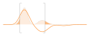
$\scriptsize f, \quad$
[ ] $\scriptsize T, \quad$
$\scriptsize |f|^2, \quad$
$\scriptsize \int_{T^C} |f|^2, \quad$
$\scriptsize \normaLL{f}^2$
Principio di indeterminazione di Donoho-Stark
Se $f \in \spLLd$ tale che $f \neq 0$ è $\varepsilon_T$-concentrata su $T \subseteq \spR^d$ e
$\hat{f}$ è $\varepsilon_\Omega$-concentrata su $\Omega \subseteq \spR^d$, allora
\[
|T| \, |\Omega| \geqslant (1 - \varepsilon_T - \varepsilon_\Omega)^2 \, ,
\]
dove $|\, \cdot \,|$ + la misura di un insieme misurabile.
La trasformata di Gabor
Al fine di superare l'inefficacia della trasformata di Fourier di fornire informazioni riguardante la
distribuzione temporale (o spaziale) delle frequenze, è possibile — ispirandosi al funzionamento
dell'apparato uditivo umano — immaginare di segmentare un segnale prima che questo venga analizzato.
Fondamenti della trasformata di Gabor
Trasformata di Gabor
Fissata una funzione fissa $g \tc g \neq 0$, detta funzione finestra, la trasformata di Gabor
— detta anche Short Time Fourier Transform (STFT) — di una funzione $f$ rispetto a $g$ è definita da
\[
\begin{gathered}
V_g \tc f \, \longmapsto V_g f \\
V_g f(x, \omega) \triangleq \intRd f(t) \overline{g(t - x)} \, \eFtr{\omega}{t} \, dt \, , \quad
\text{per} \; x, \omega \in \spR^d \, ,
\end{gathered}
\]
quando l'integrale è definito.
Essendo $V_g f$ in generale complesso, per visualizzare la trasformata di Gabor è solitamente impiegato
lo spettrogramma, ovvero $|V_g f(x, \omega)|^2$ per $x \in \Dom f \,$ e $\, \omega \in \Dom
\hat{f}$.
La trasformata di Gabor può essere espressa in varie forme.
Per $f, g \in \spLLd$,
\[
\begin{split}
V_g f(x, \omega) & = (f \cdot T_x \bar{g})\,\hat{}\: (\omega) \\[.5em]
& = \inprod{f}{M_\omega T_x g} \\[.5em]
& = \inprod{\hat{f}}{T_\omega M_x \hat{g}} \\[.5em]
& = \eFtr{\omega}{x} V_{\hat{g}} \hat{f} (\omega, -x) \\
& = (\hat{f} * M:x \hat{g}^*)(\omega)
\end{split}
\]
Da $V_g f(x, \omega) = (f \cdot T_x \bar{g})\,\hat{}\: (\omega)$ segue che, per $f, g \in \spLLd$, $f
\cdot T_x \bar{g} \in \spLd$ e quindi la trasformata è definita puntualmente.
Trasformata di Gabor su $L^2$
Se $g, \in \spLLd \tc g \neq 0$, la trasformata di gabor definisce una mappa lineare
\[
\begin{array}{r c c c}
V_g \tc \!\!\! & \spLLd & \! \longrightarrow & \! \spLLdd \\
& f & \! \longmapsto & \! V_g f \, .
\end{array}
\]
Inoltre, è possibile definire la trasformata di Gabor come composizione:
\[
\begin{array}{c c c c c c c c c}
V
& \tc & \spLLd
& \!\! \longrightarrow \!\! & \spLLdd
& \!\! \longrightarrow \!\! & \spLLdd
& \!\! \longrightarrow \!\! & \spLLdd \\
&& f, g
& \!\! \stackrel{\overline{\otimes}}{\longmapsto}
\!\! & f \otimes \bar{g}
& \!\! \stackrel{\mathcal{T}_a}{\longmapsto}
\!\! & \mathcal{T_a} (f \otimes \bar{g})
& \!\! \stackrel{\Ftr_2}{\longmapsto}
\!\! & \Ftr_2 \mathcal{T}_a (f \otimes \bar{g}) \, ,
\end{array}
\]
dove $\overline{\otimes}$ è un prodotto tensoriale, $\mathcal{T}_a$ una trasformazione
asimmetrica di coordinate e $\Ftr_2$ una trasformata parziale di Fourier, definiti
rispettivamente come
\[
\begin{array}{c c c c r c l}
\overline{\otimes} & \tc & \spLLd & \longrightarrow \spLLdd \tc
& f \overline{\otimes} g \, (x, t)
& \triangleq & f \otimes \bar{g} (x, t) \triangleq f(x) \, \bar{g}(t) \, , \\[.5em]
\mathcal{T}_a & \tc & \spLLdd & \longrightarrow \spLLdd \tc
& \mathcal{T}_a F(x, t)
& \triangleq & F(t, t - x) \, , \\[.5em]
\Ftr_2 & \tc &\spLLdd & \longrightarrow \spLLdd \tc
& \Ftr_2 F(x, w)
& \triangleq & \intRd F(x, t) \eFtr{t}{w} dt \, .
\end{array}
\]
Gli operatori $\mathcal{T}_a$ e $\Ftr_2$ sono isometrici su $\spLLd$. Inoltre, se $f, g \in \spLLd$,
allora
\[
\normaLLdd{f \overline{\otimes} g} = \normaLLd{f} \, \normaLLd{g} \, .
\]
Ortogonalità
Per $j = 1, 2$, se $f_j, g_j \in \spLLd$, allora $V_{g_j} f_j \in \spLLdd$ e vale l'equivalenza
di ortogonalità
\[
\inprod{V_{g_1} f_1}{V_{g_2} f_2}_{\spLLdd}
= \inprod{f_1}{f_2} \overline{\inprod{g_1}{g_2}} \, .
\]
RIcordando che l'isometria $\Ftr_2 \mathcal{T}_a$ preserva il prodotto interno, segue che
\[
\begin{split}
\inprod{V_{g_1} f_1}{V_{g_2} f_2}_{\spLLd}
& =
\inprod{\Ftr_2 \mathcal{T}_a (f_1 \otimes \bar{g}_1)}{\Ftr_2 \mathcal{T}_a (f_2 \otimes \bar{g}_2)}
\\
& = \inprod{f_1 \otimes \bar{g}_1}{f_2 \otimes \bar{g}_2} \mathop{=}^{\text{def}} \inprod{f_1
\bar{g}_1}{f_2
\bar{g}_2} \\[.2em]
& = \intRd f_1(t) \overline{f_2(t)} \, \Big( \intRd \overline{g_1(t - x)} g_2(t - x) dx \Big) \ dt
\\[.2em]
& = \inprod{f_1}{f_2} \overline{\inprod{g_1}{g_2}} \, .
\end{split}
\]
Formula di inversione
Come per la trasformata di Fourier, è possibile ricostruire il segnale un segnale a partire dalla sua
trasformata di Gabor. Tuttavia, occorre prestare attenzione all'integrazione dell'operatore $\phi \tc
\spR^{2d} \, \longrightarrow \, \spLLdd$, dato dalla combinazione della trasformata di Gabor e una
finestra di decodifica \, .
Sia $\phi \tc \spR^n \, \longrightarrow \, H$ dove $H$ è uno spazio di Hilbert. Vogliamo pertanto
definire
\[
\int_{\spR^n} \phi(t) \, dt \in H \, .
\]
Poiché $H$ è uno spazio di Hilbert, si può definire una biiezione tra $H$ e il suo duale $H^*$
\[
\begin{array}{c c c}
x & \longleftrightarrow & h_x \\
H & \longleftrightarrow & H^*
\end{array}
\quad \text{con} \quad
h_x (y) = \inprod{y}{x}, \;\; \forall y \in H \, .
\]
Possiamo quindi definire
\[
\ell \tc y \in H \, \longmapsto \, \int_{\spR^n} \inprod{y}{\phi(t)\!} \, dt \, ,
\]
che è lineare in $y$. Se $\int \norma{\phi(t)} \, dt = C$, allora $|\ell(y)| \leqslant C \norma{y}$ e
quindi $\ell$ è lineare e limitato, cioè $l \in H^*$. Pertanto, dal teorema di rappresentazione di
Riesz-Fréchet, si ha
\[
\exists ! \; x \in H \tc \ell(y) = \inprod{y}{x} \;\; \forall y \in H
\]
e possiamo identificare $\ell \equiv x \in H$. Quindi
\[
\ell(y) = \int_{\spR^n} \inprod{y}{\phi(t)\!} \, dt \mathop{=}^{\text{def}}
\overbracket{\inprod{y}{\underbracket{\int_{\spR^n} \phi(t) \, dt}_{x \, \equiv \ell}}}^{\inprod{y}{x}}
\, .
\]
Ciò significa che possiamo formalmente definire
\[
\int_{\spR^n} \phi(t) \, dt \mathop{=}^{\text{def}} x
\quad \text{dove} \quad
x \in H \tc \underbracket{\int_{\spR^n} \inprod{y}{\phi(t)} \, dt}_{\ell(y)} = \inprod{y}{x} \;\;
\forall y \in H \, .
\]
Nel caso di nostro interesse, abbiamo $H = \spLLd$, $F \in \spLLdd$ e la finestra di decodifica fissata
$\gamma \in \spLLd \tc \gamma \neq 0$. Pertanto
\[
\begin{gathered}
\phi \tc t = (x, \omega) \in \spR^{2d} \, \longmapsto \, F(x, \omega) M_\omega T_x \gamma \in \spLLdd =
H \, , \\
\ell \tc h \in \spLLd \, \longmapsto \, \int_{\spR^{2d}} F(x, \omega) \overline{\inprod{h}{M_\omega T_x
\gamma}_{\spLLd}} \, dx \, d\omega \, .
\end{gathered}
\]
Chiaramente, $\ell$ è lineare e si $|\ell(h)| \leqslant \normaLLdd{f} \normaLLd {\gamma} \normaLLd{h}$.
Quindi $\ell$ è un funzionale lineare e limitato e si può applicare il teorema di rappresentazione di
Riesz-Fréchet, da cui
\[
\exists ! \; f = \int_{\spR^{2d}} F(x, \omega) M_\omega T_x \gamma \, dx \, d\omega \in \spLLd \tc
\ell(h) = \inprod{h}{f}_{\spLLd} \, .
\]
con $\normaLLd{f} \leqslant \normaLLdd{F} \normaLLd{\gamma}$
Formula di inversione della trasformata di Gabor
Date due funzioni finestra $g, \gamma \in \spLLd \tc \inprod{g, \gamma} \neq 0$,
\[
f = \frac{1}{\gamma} \int_{\spR^{2d}} V_g f(x, \omega) M_\omega T_x \gamma \, d\omega \, dx \quad
\forall f \in \spLLd \, .
\]
L'integrale
\[
\tilde{f} = \frac{1}{\gamma} \int_{\spR^{2d}} V_g f(x, \omega) M_\omega T_x \gamma \, d\omega \, dx
\]
è ben definito in $\spLLd$ poiché $V_g f \in \spLLdd$. Inoltre,
\[
\begin{split}
\inprod{\widetilde{f}}{h}
& = \dfrac{1}{\inprod{\gamma}{g}} \intRdd \! V_g f (x, \omega) \, \overline{\inprod{h}{M_\omega T_x
\gamma}} \, dx \, d\omega \\
& = \dfrac{1}{\inprod{\gamma}{g}} \inprod{V_g f}{V_\gamma \, h}
\, = \, \inprod{f}{h} \, ,
\end{split}
\]
poiché dalla relazione di ortogonalità si ha $\inprod{V_g f}{V_\gamma h} = \inprod{f}{h}
\inprod{\gamma}{g}$. Quindi $\tilde{f} = f$.
Analisi tempo-frequenza e operatori di localizzazione
L'analisi di un segnale si divide in tre fasi
-
Analisi: viene fornita una nuova rappresentazione dl segnale nello spazio tempo-frequenza
per mezzo della trasformata di Gabor.
\[
f(x) \, \longmapsto \, V_g f(x, \omega)
\]
-
Processing (o elaborazione): $V_g f$ è trasformato ulteriormente
\[
\mathfrak{F} \tc V_g f(x, \omega) \, \longmapsto \, \mathfrak{F} V_g f(x, \omega) \, .
\]
Ad esempio, $V_g f(x, \omega)$ può essere moltiplicato per una funzione $a(x, \omega)$ che
assume valore zero in alcune aree
\[
\mathfrak{F} \tc V_g f(x, \omega) \, \longmapsto \, a(x, \omega) \, V_g f(x, \omega) \, .
\]
-
Sintesi (o ricostruzione): il segnale $f$ è ricostruito a partire dalla sua
rappresentazione, eventualmente processata.
\[
\widetilde{f}(x) = \intRdd \! \mathfrak{F} \, V_g f(x, \omega) M_\omega T_x \gamma \, dx \,
d\omega \, .
\]
Operatore di localizzazione
La seguente combinazione di analisi, elaborazione e sintesi è detta operatore di
localizzazione con simbolo $a \in \spLLdd$:
\[
f(t) \: \longmapsto \:
\widetilde{f}(t) \triangleq \underbracket{\intRdd \overbracket{a(x, \omega) \, \underbracket{V_g
f(x, \omega)}_{\text{analisi}}}^{\text{elaborazione}} M_\omega T_x \gamma \, dx \,
d\omega}_{\text{sintesi}}
\, .
\]
Limitatezza e compattezza
Consideriamo ora l'operatore di localizzazione della forma
\[
D_{F, \varphi, \psi} f (t) \triangleq \intRdd \underbracket{F(z)}_{\text{symbol}}
\inprod{f}{\varphi_z}_{\spLLd} \, \psi_z (t) \, dz \quad t \in \spR^d
\]
dove $z = (x, \omega)$ e $\varphi_z(t) = e^{i t \cdot \omega} \varphi(t - x)$.
Per $p \in [1, \infty]$, se $F \in \spLdd$, $\psi \in L^p(\spR^d)$, $\varphi \in
L^{p^\prime}(\spR^d)$, allora $D_{F, \psi, \varphi} \tc L^p(\spR^d) \, \longrightarrow \,
L^p(\spR^d)$ è limitato e
\[
\norma{D_{F, \varphi, \psi}}_{L^p} \leqslant \norma{\psi}_{L^p} \, \norma{\varphi}_{L^{p^\prime}} \,
\normaL{F}
\, .
\]
Per $p \in [1, \infty]$, se $F \in L^p(\spR^d)$ e $\varphi, \psi \in \spLLd$, allora $D_{F, \psi,
\varphi} \tc \spLLd \, \longrightarrow \, \spLLd$ è un operatore lineare e limitato e
\[
\normaLL{D_{F, \varphi, \psi}} \leqslant \norma{F}_{L^p} \, \normaLL{\psi} \, \normaLL{\varphi} \, .
\]
In ultima istanza, la compattezza e la Limitatezza di $D_{F, \varphi, \psi} \tc L^q(\spR^d) \,
\longrightarrow
\, L^q(\spR^d)$ possono essere dimostrate per $F \in L^p(\spR^{2d})$, $p \in [1, \infty]$, $\varphi,
\psi
\in \spLd \cap L^\infty(\spR^d)$
e
\[
q \in \big[ \tfrac{2p}{p + 1}, \tfrac{2p}{p - 1} \big] \, .
\]
Inoltre, possono essere fornite delle stime di $\norma{D_{F, \varphi, \psi}}_{L^q}$.
Denoising di un segnale audio
Consideriamo un segnale reale $f \tc \spR \, \longrightarrow \, \spR$ degradato da rumore bianco
con volume inferiore a quello del segnale pulito. La rimozione del rumore (denoising) può
essere condotta moltiplicando $V_g f(x, \omega)$ per una funzione $a(x, \omega)$ nulla per $(x, \omega)$
tali che $|V_g f(x, \omega)|^2 \lt A$, dove $A$ è una certa soglia.
\[
\hspace{-1.5em} V_g f(x, \omega) \, \longrightarrow \, a(x, \omega) V_g f(x, \omega)
\quad \text{dove} \quad
a(x, \omega) = \begin{cases}
0 & \text{se} \; |V_g f(x, \omega)|^2 \lt A \\
1 & \text{altrimenti}.
\end{cases}
\]
Tale operazione comporta una perdita di informazione, che occorre limitare il più possibile al solo
rumore. Sussiste un compromesso tra rumore rimosso e qualità del segnale sintetizzato.
$\scriptsize f$
$\scriptsize |V_g f|^2$
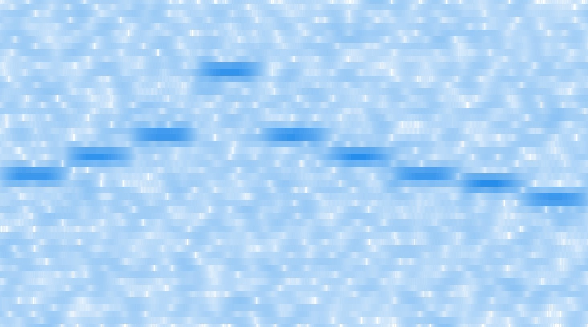
$\scriptsize |a \cdot V_g f|^2$
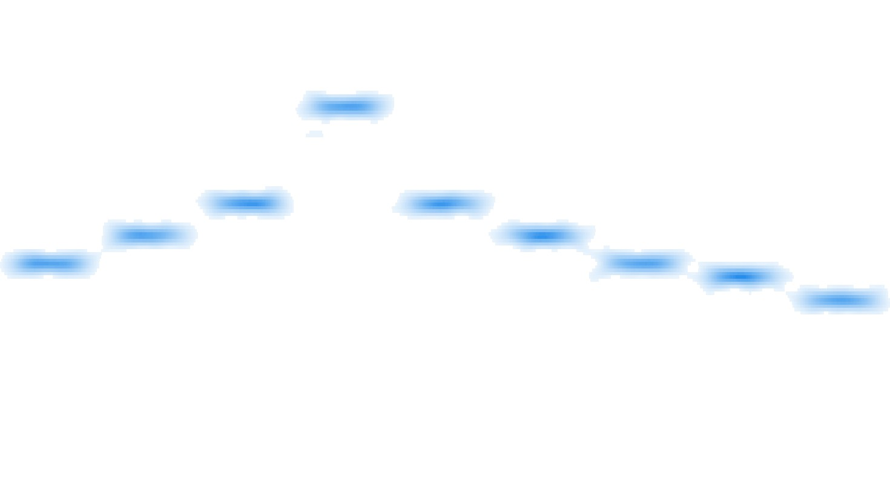
$\scriptsize \tilde{f} \; \text{(denoised signal)}$
Taglio tempo-frequenza
È inoltre possibile rimuovere — con maggior efficacia rispetto a quanto reso possibile dall'elaborazione
della trasformata di Fourier — una frequenza indesiderate moltiplicando $V_g f (x, \omega)$ per una
funzione nulla nell'area $R \in \spR^{2d}$ (ad esempio $R = [x_1, x_2] \times [\omega_1, \omega_2]$) in
cui tale frequenza è localizzata.
\[
\hspace{-1.5em} V_g f(x, \omega) \, \longrightarrow \, a(x, \omega) V_g f(x, \omega)
\quad \text{dove} \quad
a(x, \omega) = \begin{cases}
0 & \text{se} \; (x, \omega) \in R \\
1 & \text{altrimenti}.
\end{cases}
\]
$\scriptsize f$
$\scriptsize |V_g f|^2$
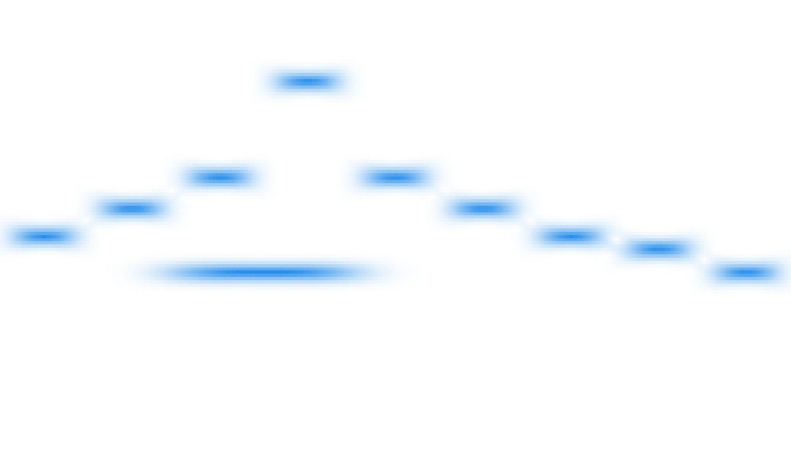
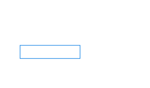
$\scriptsize |a \cdot V_g f|^2$
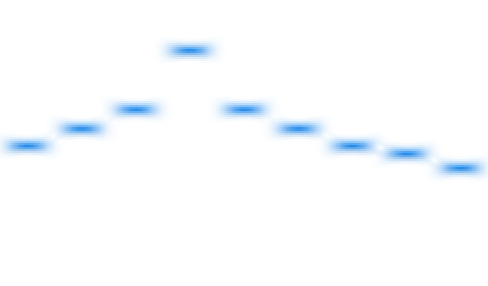
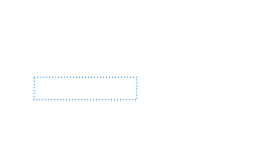
$\scriptsize \tilde{f} \; \text{(cut signal)}$
Analogia con lo spartito musicale
È possibile osservare un'analogia tra lo spettrogramma e una partitura musicale. Infatti, entrambe
sono rappresentazioni di un segnale che mettono in relazione tempo e frequenza.
Matematicamente, il segnale definito da uno spartito può essere descritto utilizzando una funzione
definita a tratti, per cui ciascun tratto è un'onda sinusoidale $\sin(2 \pi \omega t)$, dove
$\omega$ è la frequenza della nota corrispondente. Nel sistema occidentale a 12 note con
temperamento equabile, scelta una frequenza di base $\omega_0$, le frequenze delle note $A,B,C, ...$
della scala sono date da
\[
\omega_A = 2^{\frac{0}{12}} \omega_0, \;\; w_{A\sharp} = w_{B\flat} = 2^{\frac{1}{12}} \omega_0,
\;\; ... \;\; \omega_{G\sharp} = 2^{\frac{11}{12}} \omega_0 \, .
\]
Eventualmente, l'onda sinusoidale $s(t)$ corrsipondete ad una nota può essere moltiplicata per una
curva ADSR (
Attack-Decay-Sustain-Release), denotata con $c(t)$ nell'immagine, che
modula in volume della nota nel tempo.
$\scriptsize s(t), \quad$
$\scriptsize c(t), \quad$
$\scriptsize f(t) = c(t) \cdot s(t)$
Si osservi, ad esempio, lo spettrogramma della prima battuta della
Toccata di Léon Boëllmann,
tratta dalla
Suite Gothique, Op. 25 (1895).
$\scriptsize |V_g f|^2$
$\scriptsize f$
Tuttaiva, in una partitura, ogni nota rappresenta un suono ben localizzato nel tempo e con una
precisa frequenza. Lo stesso non si può dire dello spettrogramma. È possibile far variare la
larghezza della finestra impiegata nell'analisi, migliorando la risoluzione temporale o quella nel
dominio delle frequenza. È però impossibile migliorare al contempo entrambe.
Per una finestra gaussiana più stretta $\varphi_{a_1}$, lo spettrogramma $|V_{\varphi_{a_1}} f(x,
\omega)|^2$ presenta una maggiore risoluzione temporale, ma peggiora quella delle frequenza.
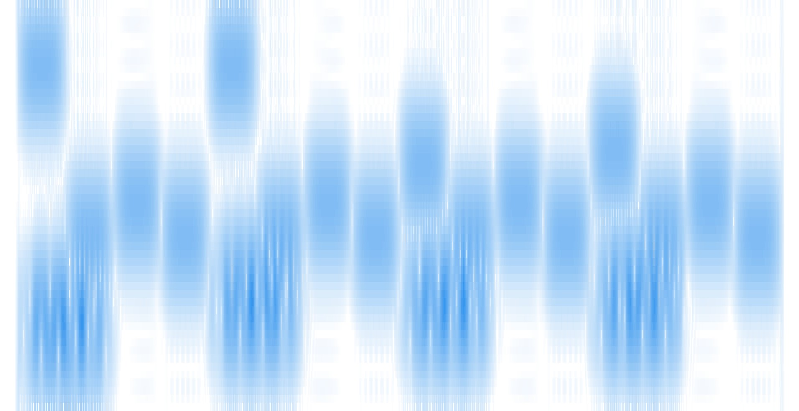
$\scriptsize |V_{\varphi_{a_1}} f|^2$
$\scriptsize \varphi_{a_1}$
Vicevera, per una finestra guassiana più larga $\varphi_{a_2}$, lo spettrogramma $|V_{\varphi_{a_2}}
f(x, \omega)|^2$ presenta una maggiore risoluzione nel dominio delle frequenza, ma peggiora quella
temporale.
$\scriptsize |V_{\varphi_{a_1}} f|^2$
$\scriptsize \varphi_{a_1}$
Principio di indeterminazione per la trasformata di Gabor
Si può formalizzare maggiormente quando descritto nella precedente sezione, che è diretta
conseguenza del principio di indeterminazione per la trasformata di Fourier.
Sia $f \in \spLLd$ un segnale e $\varphi_a$ una finestra gaussiana. Fissato $x \in \spR^d$, si ha
\[
V_{g_a} f(x, \omega) = (F_a)\,\hat{}\, (x) \quad \text{dove} \quad F_a(t) \triangleq f(t) \cdot T_x
\bar{\varphi}_a (t) \, .
\]
Dalla disuguaglianza HPW segue
\[
\Delta_{F_a} t \cdot \Delta_{\widehat{F}_a} \omega \geqslant \frac{1}{4\pi} \normaLL{F_a} \, ,
\]
dove $\Delta_{F_a} t \,$ e $\, \Delta_{F_a} \omega$ sono le deviazioni standard.
Finestre più strette causano minor dispersione temporale. La disuguaglianza deve allora essere
compensata da un incremento nella dispersione delle frequenze e viceversa.
Principio di indeterminazione di Lieb
È inoltre possibile formulare il principio di indeterminazione in una forma simile a quella di
Donoho-Stark e che coinvolge direttamente la trasfromata di Gabor.
Per $\, \varepsilon > 0$,
\[
\begin{rcases}
f, g \in \spLLd \tc \normaLL{f} = \normaLL{g} = 1 \, , & \\
U \subseteq \spR[2] \tc \int_U |V_g f (x, \omega)|^2 \, dx \, d\omega \geqslant 1 - \varepsilon &
\end{rcases}
\; \Longrightarrow \;
|U| \geqslant 1 - \varepsilon \, .
\]
\[
\begin{gathered}
|V_g f (x, \omega)| = |\inprod{f}{M_\omega}|
\vertarrowbox{\; \leqslant \;\;}{\mathclap{\text{Cauchy-Schwartz}}}
\normaLL{f} \normaLL{g} = 1 \quad \forall (x, \omega) \in \spR^{2d} \\[1em]
\hspace{-.5cm}
\Longrightarrow \;\;
\underbracket{1 - \varepsilon \leqslant \textstyle\int_U |V_g f|^2 \, dx \,
d\omega}_{\text{hypothesis}}
\, \leqslant \, \underbracket{\norma{V_g f}_{L^\infty}^2 |U| \leqslant |U|}_{\text{previous step}}
\end{gathered}
\]
Ciò significa che un sengale non può essere concetrato su insiemi arbitrariamenti piccoli nello
spazio tempo-frequenza, indipendentemente dalla rappresentazione impiegata.
In effetti, poiché $\normaLL{f} = \normaLL{g} = 1$ implica $\normaLL{V_g f} = $, più $V_g f$ è
concentrato su $U$, maggiore diventa la misura di $U$. Viceversa, se $V_g f$ è
$\varepsilon$-concentrato su $U$, allora $|U| \to 1 \,$ per $\, \varepsilon \to 0$.
Oltre la trasformata di Gabor
Al fine di migliorare sia la risoluzione temporale sia quelle delle frequenze, possiamo immaginare
di combinare due rappresentazioni ottenute con due differenti finestre.
Consideriamo un segnale $f \tc \spR \, \longrightarrow \, \spR$ e due finestre $g_1, g_2 \tc \spR \,
\longrightarrow \, \spR$.
Spettrogramma a due finestre
Lo spettrogramma di un segnale $f$ rispetto a due finestre $g_1$ e $g_2$ è definito come
\[
\Spectrogram_{g_1, \, g_2} f \triangleq V_{g_1} f \cdot \overline{V_{g_2} f} \, .
\]
In particolare, per $g_1 = g_2$, si ha
\[
\Spectrogram_{g_1, \, g_1} f \triangleq \Spectrogram_{g_1} f = V_{g_1} f \cdot \overline{V_{g_1} f} =
\underbracket{|V_{g_1} f|^2}_{\mathclap{\text{spectrogram of} \; V_{g_1} f}} \, .
\]
Poiché $\Spectrogram_{g_1, \, g_2}$ è solitamente complesso, consideriamo $|\Spectrogram_{g_1, \, g_2}
f|$ al fine di visualizzarlo graficamente. Allora
\[
|\Spectrogram_{g_1, \, g_2} f| = |V_{g_1} f| \cdot |\overline{V_{g_2} f}| = |V_{g_1} f| \cdot |V_{g_2}
f| =
\Spectrogram_{g_1}^{\frac{1}{2}} \cdot \Spectrogram_{g_2}^{\frac{1}{2}} \, .
\]
Sia ora $f \tc \spR \, \longrightarrow \, \spR$ una semplice onda sinusoidale, eventualmente
moltiplicata per una curva ADSR. Consideriamo poi due finestre gaussiane $\varphi_{a_1}, \varphi_{a_2}$
con $a \lt b$. Allora $\Spectrogram_{\varphi_a, \, \varphi_b} \, f (x, \omega)$ offrirà dei
miglioramenti in termini sia di risoluzione temporale sia delle frequenze. Infatti
\[
\begin{split}
|\Spectrogram_{\varphi_a, \, \varphi_b} \, f (x, \omega)| \approx 0
& \quad \text{se} \quad |V_{\varphi_a} f (x, \omega)| \approx 0 \;\; \lor \;\; |V_{\varphi_b} f (x,
\omega)| \approx 0 \\
|\Spectrogram_{\varphi_a, \, \varphi_b} \, f (x, \omega)| \not\approx 0
& \quad \text{se} \quad |V_{\varphi_a} f (x, \omega)| \not\approx 0 \;\; \land \;\; |V_{\varphi_b} f (x,
\omega)| \not\approx 0 \, .
\end{split}
\]
$\scriptsize f$
$\scriptsize \varphi_a$
$\scriptsize |V_{\varphi_a} f|^2$
$\scriptsize \varphi_b$
$\scriptsize |V_{\varphi_b} f|^2$
$\scriptsize f$
Frequenze fantasma
Apparentemente, è stato possibile bypassare le limitazioni introdotte dal principio di
indeterminazione.
Tuttavia, diversi esempi mettono il luce come il principio di indeterminazioni si manifesti in
realtà in
una nuova e sorprendente forma.
Si consideri un segnale $f(t)$ composto da due diverse onde sinusoidali
\[
f(t) =
\begin{cases}
\sin(2 \pi \, \omega_1 \cdot t) & \text{se} \;\; t \in [t_{1, 1}, t_{1, 2}] \\
\sin(2 \pi \, \omega_2 \cdot t) & \text{se} \;\; t \in [t_{2, 1}, t_{2, 2}] \\
0 & \text{otherwise}
\end{cases} \\[.5em]
\]
dove $t_{1, 1} < t_{1, 2} < t_{2, 1} < t_{2, 2}$, mentre $\omega_1, \omega_2 \in (\omega -
\varepsilon, \, \omega + \varepsilon)$ per un certo $\omega$ e un sufficientemente piccolo
$\varepsilon$.
$\scriptsize f$
$\scriptsize \varphi_a$
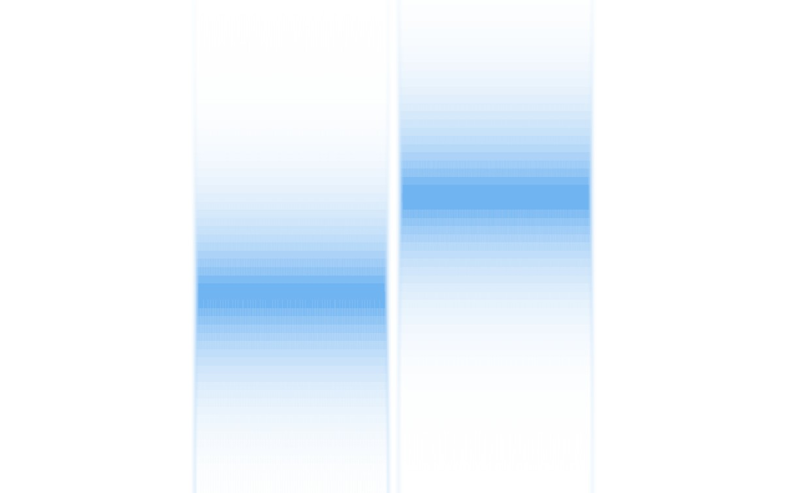
$\scriptsize |V_{\varphi_a} f|^2$
$\scriptsize \varphi_b$
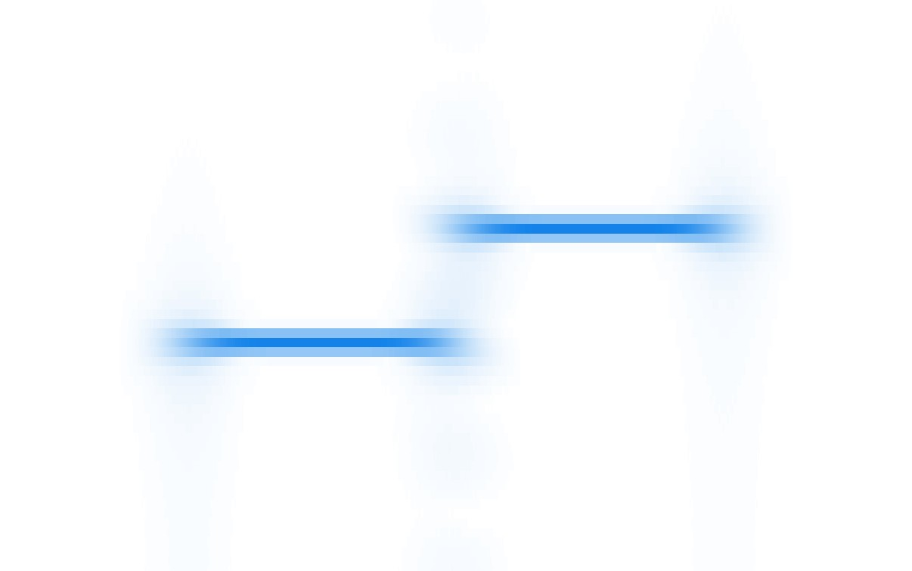
$\scriptsize |V_{\varphi_b} f|^2$
$\scriptsize f$
È possibile osservare artefatti in intorni di $(t_{1, 2}, \, \omega_2)$ e $(t_{2, 1}, \, \omega_1)$.
In
effetti,
\[
|V_{\varphi_a} \, f (x, \omega)| \not\approx 0
\;\; \land \;\;
|V_{\varphi_b} \, f (x, \omega)| \not\approx 0
\;\; \Longrightarrow \;\;
|\Spectrogram_{\varphi_a, \varphi_b} \, f (x, \omega)| \not\approx 0
\]
per $(x, \omega) \in I_1$ e $(x, \omega) \in I_2$, intorni di $(t_{1, 2}, \, \omega_2)$ e $(t_{2,
1}, \,
\omega_1)$ rispettivamente. Pertanto, appaiono nello spettrogramma delle frequenze non presenti nel
sengale di partenza e che pertanto vengono chiamate frequenze fantasma.
Tale fenomeno è ulteriormente amplificato per segnali più complessi.
$\scriptsize f$
$\scriptsize \varphi_a$
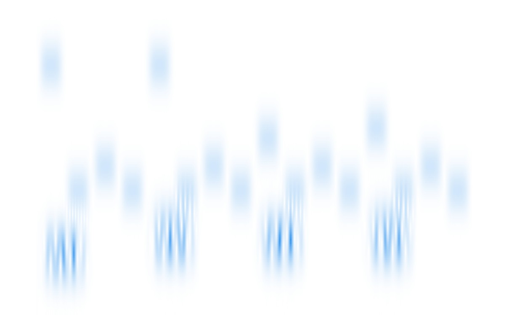
$\scriptsize |V_{\varphi_a} f|^2$
$\scriptsize \varphi_b$
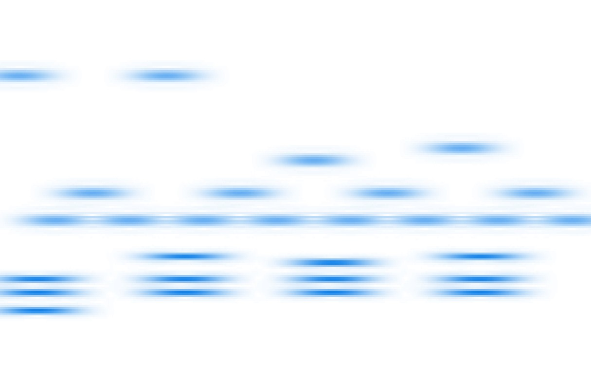
$\scriptsize |V_{\varphi_b} f|^2$
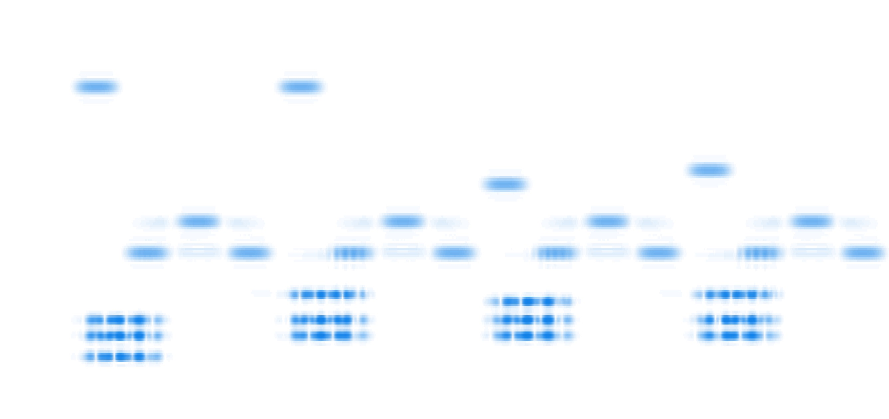
$\scriptsize f$